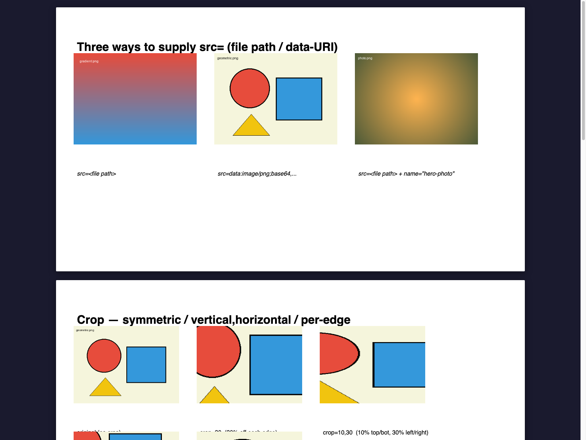
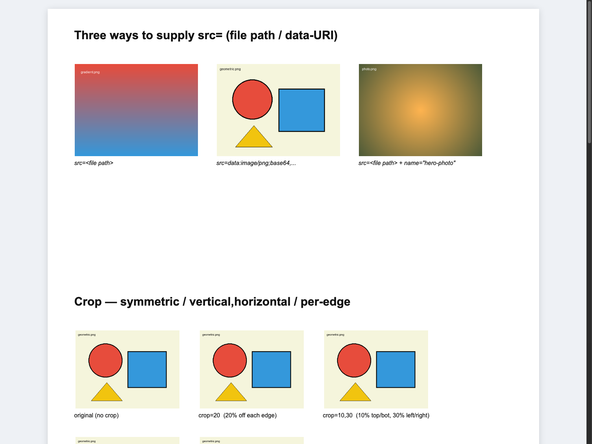
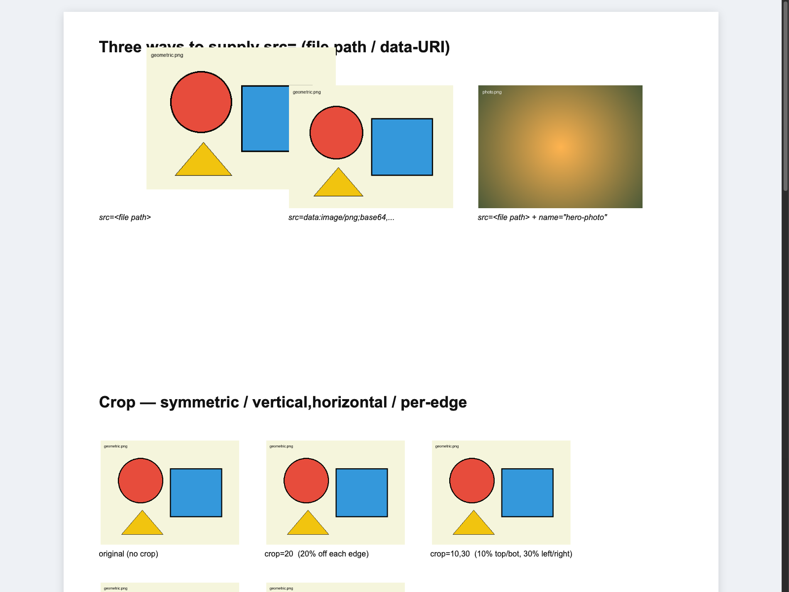
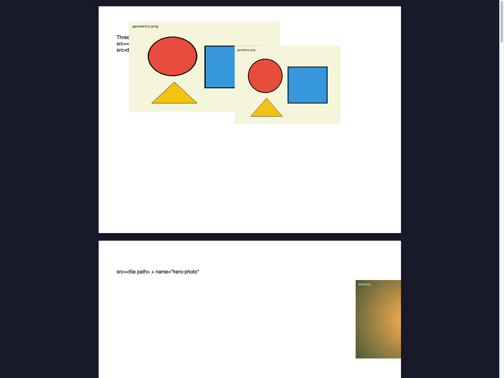

1. 原始 PPTX
OfficeCLI 原文件预览，用作视觉基线。

源文件：examples/ppt/pictures/pictures-basic.pptx。HCD 共映射 25 个图片节点。
revision 1 把节点 n_9f0a3d6a60677cc2a40a592eb56cb04f 的图片替换为第二张几何示意图，
并修改其 x/y/width/height；nodeId 保持不变。
OfficeCLI 原文件预览，用作视觉基线。

导入后的原始 HCD HTML，图片坐标与资源尚未修改。

通过 image.replace + image.geometry 修改后的 HCD HTML。

验证新图片确实写入 PPTX；该无源重建为 SEMANTIC 等级，不用于和源 PPTX 做像素级比较。

当前 source-backed Office 图片媒体/几何增量回写尚未实现；传入 --source 时会在写文件前拒绝。
上面的 revision 1 HTML 是图片修改的 canonical 结果，PPTX 是无源纯 Rust 语义重建产物。